ggOceanMaps User Manual
Mikko Vihtakari (Institute of Marine Research)
19 June, 2026
Source:vignettes/ggOceanMaps.Rmd
ggOceanMaps.RmdThe ggOceanMaps package for R allows plotting data on bathymetric maps using ggplot2. The package is designed for ocean sciences and greatly simplifies bathymetric map plotting anywhere around the globe. ggOceanMaps uses openly available geographic data. Citing the particular data sources is advised by the CC-BY licenses whenever maps from the package are published (see the Citations and data sources section). Note that the package comes with absolutely no warranty and that maps generated by the package are meant for plotting scientific data only. The maps are coarse generalizations of third-party data and therefore inaccurate.
This manual is a concise overview. Each topic is covered in more depth in a dedicated article:
- Bathymetry — every way to get bathymetry into a map.
- Customising shapefiles — supplying your own land, glacier, and bathymetry layers.
- Adding graphical elements — current arrows, velocity fields, and pie charts.
- Premade maps and Premade shapefiles — the built-in map sets.
- Cookbook — short, copy-pasteable recipes.
Basic use
ggOceanMaps extends on ggplot2.
The package uses spatial (sf) shape-
(e.g. vector) and (stars)
raster files, geospatial
packages for R to manipulate, and ggplot2 to plot these data. The
vector and raster plotting is conducted internally in the
basemap function, which uses ggplot’s sf
object plotting capabilities.
The primary aim of ggOceanMaps is to make plotting oceanographic spatial data as simple as feasible, but also flexible for custom modifications. The “as simple as feasible” part will be covered in this section, while the “flexible for custom modifications” part is covered in the Advanced use section. The basic use section of this tutorial assumes that the user knows how to use ggplot2. If you are not familiar with this package, you may read the Data visualization section in Hadley Wickham & Garrett Grolemund. This tutorial does not describe functions in ggOceanMaps but rather focuses on how to use them. Make sure to refer to the function documentation while reading the tutorial.
Limiting maps
To ensure simplicity, ggOceanMaps package attempts to use decimal degree coordinate system as much as possible. This system represents coordinates on a sphere, while maps are plotted in two dimensions. Therefore, the underlying map data have to be projected using different mathematical algorithms depending on the geographic location.
Maps can be limited (e.g. provide geographic location for a map)
using three arguments: limits, data, and
shapefiles. The limit type is automatically detected when
supplied to the first argument (called x) in the
basemap() and qmap() functions.
Limits
The simplest way of defining the geographic location is to use the
limits argument with decimal degrees. The limits argument
can be defined either as a numeric vector of length 1 or 4. Specifying
the argument as a single integer between 30 and 88 or -88 and -30 plots
a polar stereographic map for the Arctic or Antarctic, respectively.
library(ggOceanMaps)
library(ggspatial) # for data plotting
basemap(limits = 60) # A synonym: basemap(60) 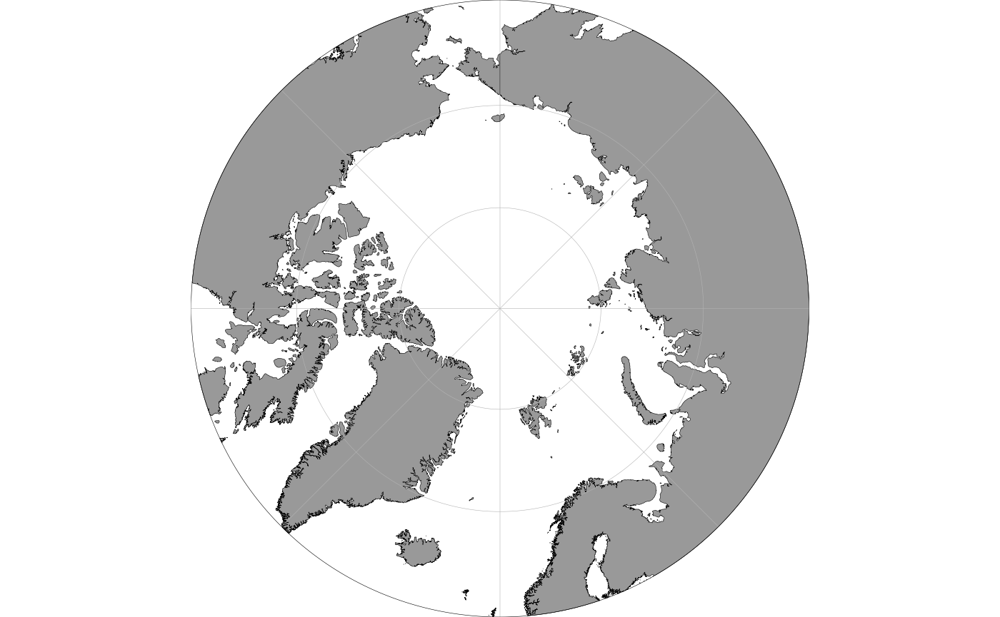
Rectangular maps are plotted by specifying the limits
argument as a numeric vector of length 4 where the first element defines
the start longitude, the second element the end longitude, the third
element the minimum latitude and the fourth element the maximum latitude
of the bounding box:
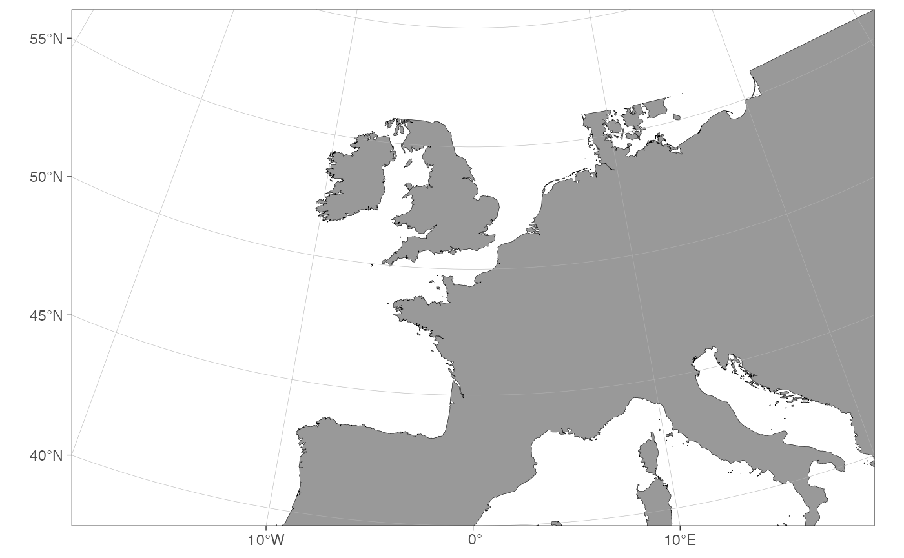
Limiting maps using decimal degrees is somewhat counter-intuitive
because maps plotted for polar regions (>= 60 or <= -60 latitude)
are actually projected to Arctic and Antarctic polar stereographic
systems. Because decimal degrees are angular units running
counter-clockwise, also the longitude limits have to be defined
counter-clockwise. Projected maps with decimal degree
limits will lead to expanded limits towards the poles when
using Arctic and Antarctic Polar Stereographic projections because
decimal degrees represent a sphere:
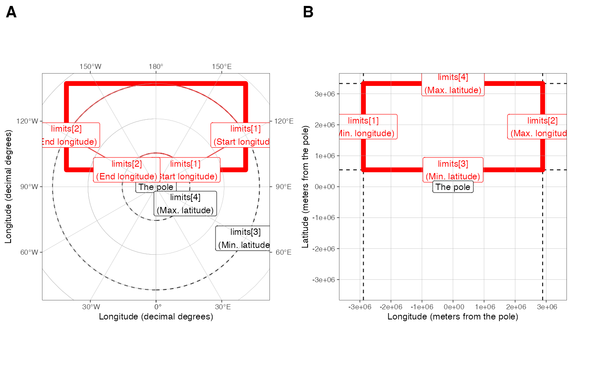
The figure above: Limiting rectangular basemaps is done by placing
four coordinates to the limit argument. A) If the limits are in decimal
degrees, the longitude limits ([1:2]) specify the start and
end segments of corresponding angular lines that should reside inside
the map area. The longitude limits are defined
counter-clockwise. The latitude limits
[3:4] define the parallels that should reside inside the
limited region given the longitude segments. Note that the resulting
limited region (polygon with thick red borders) becomes wider than the
polygon defined by the coordinates (thin red borders). The example
limits are c(120, -120, 60, 80). B) If the limits are given
as projected coordinates or as decimal degrees for maps with |latitude|
< 60, limits elements represent lines encompassing the map area in
cartesian space. The example limits are the limits from A) projected to
the Arctic stereographic (crs = 3995).
The example above as a map. Note how the latitude limits give a much larger map than one would expect from cartesian coordinates because the 60 N parallel is within the map area between 120 E and 120 W meridians.
dt <- data.frame(lon = c(120, 120, -120, -120), lat = c(60, 80, 80, 60))
basemap(limits = c(120, -120, 60, 80)) +
ggspatial::geom_spatial_polygon(
data = dt,
aes(x = lon, y = lat), fill = NA, color = "red")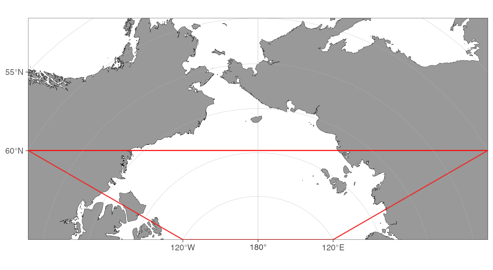
Exact control of map limits can be difficult using decimal degree
limits in polar regions. The limits argument also allows
specifying the limits in the underlying projected coordinate units.
First, we will need to find out how these units look like:
basemap(limits = 60, projection.grid = TRUE, grid.col = "red")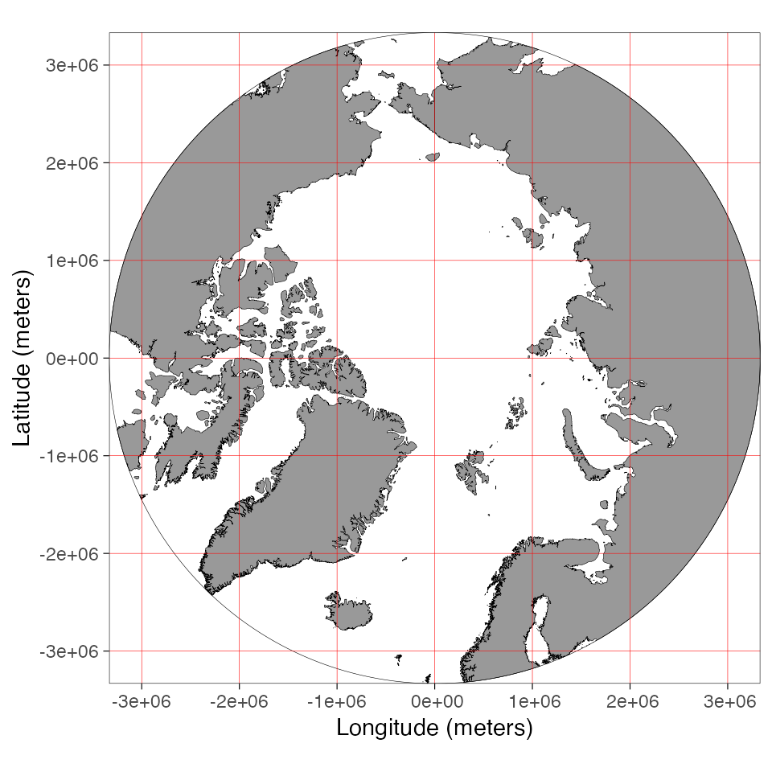
The projection.grid argument plots a grid using the
projected actual map coordinates instead of decimal degrees. The grid
helps in defining the limits using projected coordinates
giving better control over the map limits than decimal degree
coordinates. The automatic shapefile definition algorithm does not work
for projected coordinates. Therefore, if the limits are not given as
decimal degrees (any longitude outside the range [-180, 180] or latitude
[-90, 90]), the function asks to specify shapefiles. The
shapefiles can be defined by partially matching the names
of the pre-made shapefiles in shapefile_list (e.g. “Ar”
would be enough for “ArcticStereographic”):
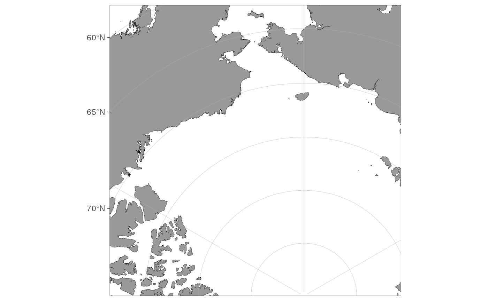
Data limits
The limits of a map can also be defined by inputting a data frame to
the data argument. The limits are automatically defined
allowing the user to quickly find limits for a desired spatial
dataset:
dt <- expand.grid(lon = c(160, 180, -160), lat = c(60, 70, 80))
basemap(data = dt) + # a synonym: basemap(dt)
ggspatial::geom_spatial_point(data = dt, aes(x = lon, y = lat), color = "red")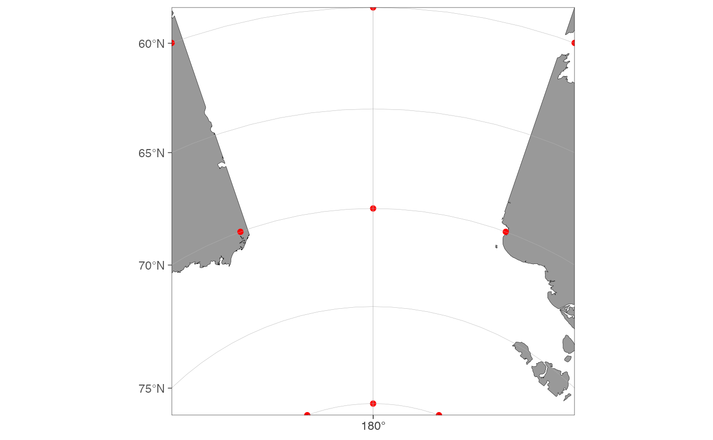
The function makes the map such that the outermost data points barely
fit into the mapped region. The space between the map borders and data
points can be adjusted using the expand.factor
argument:
cowplot::plot_grid(
basemap(dt, expand.factor = 1.1) +
ggspatial::geom_spatial_point(data = dt, aes(x = lon, y = lat), color = "red") +
theme(axis.title = element_blank()),
basemap(dt, expand.factor = 0.9) +
ggspatial::geom_spatial_point(data = dt, aes(x = lon, y = lat), color = "red") +
theme(axis.title = element_blank()),
labels = "AUTO"
)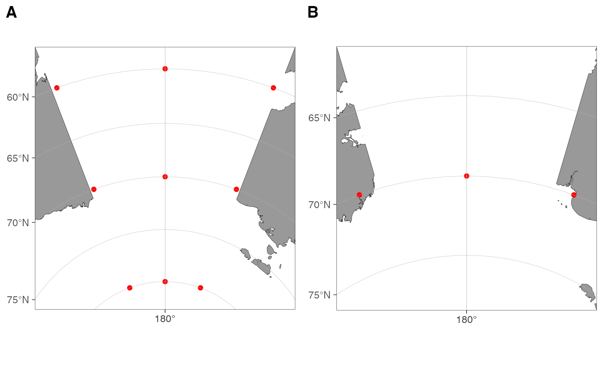
Figure above: The expand.factor argument can be used to expand (A) and reduce (B) map region in relation to data.
See the Adding data to maps
section for more information. The basemap() function
automatically detects columns containing longitude and latitude
information when the data argument is used. The automatic
detection algorithm is not very advanced and it is recommended to use
intuitive column names for longitude (such as “lon”, “long”, or
“longitude”) and latitude (“lat”, “latitude”) columns. The coordinate
data have to be given as decimal degrees for the data
argument to function.
Shape files
The ggOceanMaps package contains a set of [premade shapefiles]. Only
the decimal degree land shapes are shipped with the package while others
are downloaded as needed. See the front
page for instructions how to setup the automatic download folder
before you start downloading shape files. Any character supplied to the
x argument in the basemap() function will
automatically be understood as shapefiles argument. The
maps are limited showing the entire land shape. Use the
limits argument to further limit the shape file.
basemap("Arctic")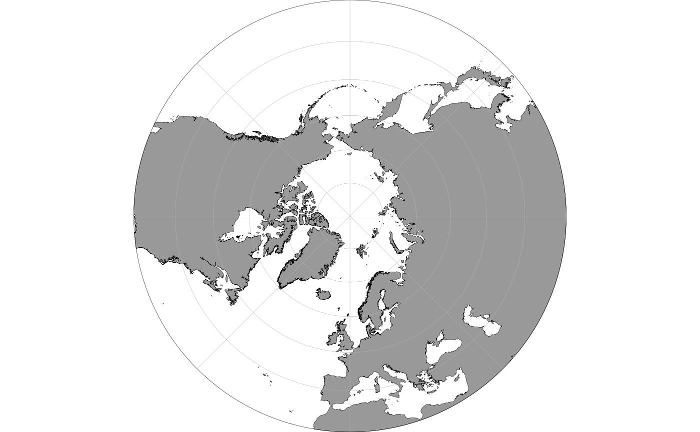
Bathymetry
The simplest way to add bathymetry is bathymetry = TRUE,
which uses the low-resolution raster shipped with the package:
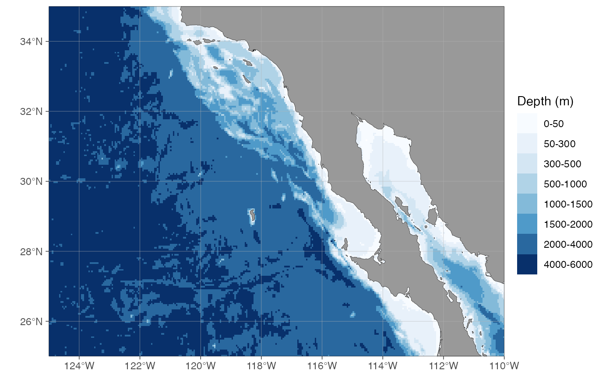
For higher detail, set bathy.style to one of the
alternative styles. The default is "raster_binned_blues"
("rbb"); switching to
"raster_continuous_blues" ("rcb") gives you a
higher-resolution continuous raster (first call downloads it from ggOceanMapsLargeData).
ggOceanMaps supports five different bathymetry data sources:
-
Shipped low-resolution raster —
"rbb"/"rbg". Default. No setup, works offline (downsampled from ETOPO 2022). -
ggOceanMapsLargeData higher-resolution data — a
continuous raster (
"rcb"), filled polygon contours ("pb"), or contour lines ("cb"). One-time download per region. -
Live download from a Web Coverage Service —
"wceb"(ETOPO1, ~1.85 km global) or"wemb"(EMODnet, ~115 m European waters). Tiles are cached locally after the first fetch. -
Your own raster (GEBCO, ETOPO, IBCAO, …) via
options(ggOceanMaps.userpath = "...")—"rub"/"rug". -
Build-your-own with
raster_bathymetry()→vector_bathymetry()/vector_land().
The bathy.style string follows the pattern
geometry_palette. Add _grays (or change the
final b → g in the abbreviation) for the
greyscale variant of any style. The full reference table — every style,
every abbreviation, and what each one needs — lives in
?basemap. Each source is walked through with examples, and
the data sources to cite are listed, in the dedicated Bathymetry vignette.
The default bathy.style can be changed by setting
the ggOceanMaps.bathy.style option.
options(ggOceanMaps.bathy.style = "poly_blues") would make
the style similar to older pre-2.0 versions of ggOceanMaps.
Glaciers
Since 2.0, glaciers require a download. It is a good idea to use the polar stereographic datasets for this purpose:
basemap(limits = -60, glaciers = TRUE, shapefiles = "Antarctic")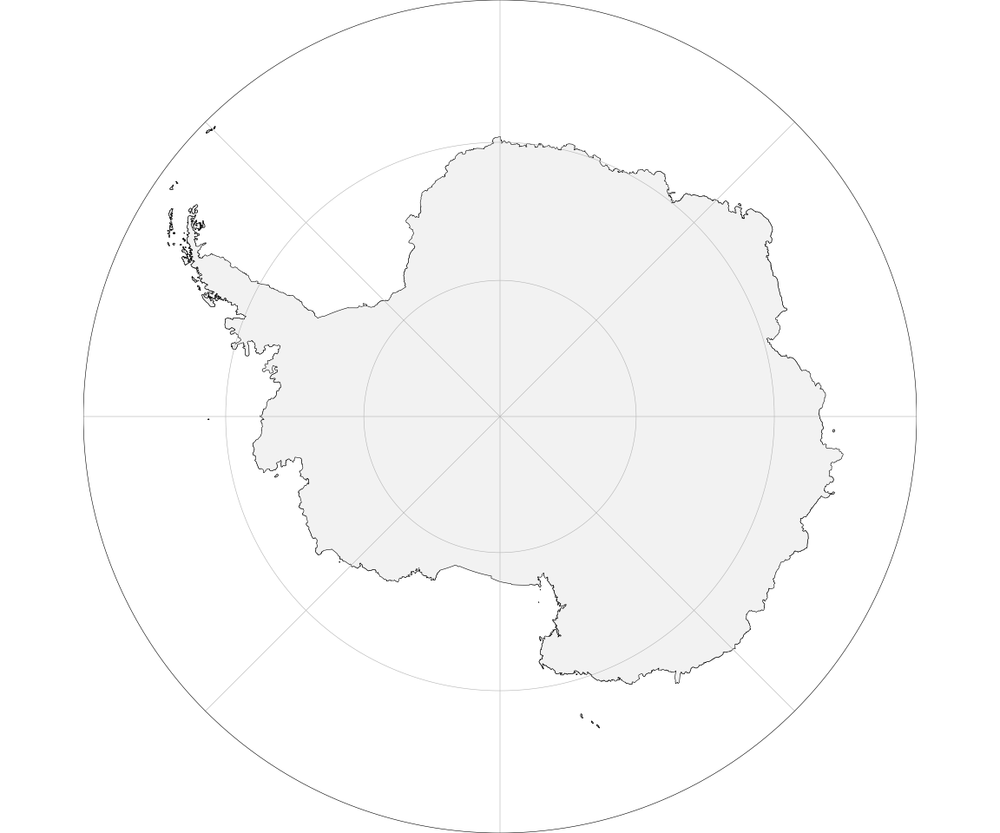
Adding data to maps
The basemap(...) function works almost similarly to the
ggplot(...) function as a base for adding further layers to
the plot. The difference between the basemap() and the
ggplot() is that the basemap() plot already
contains multiple ggplot layers. All layers except bathymetry have no
other aes mapping than x, y and
group. Bathymetry is mapped to fill or
color color in addition. This means that when you add
ggplot layers, you need to specify the data argument
explicitly as shown below. Another difference is that basemaps are
plotted using projected coordinates. The ggspatial and
ggplot’s geom_sf
functions convert the coordinates automatically to the projected
coordinates:
dt <- data.frame(lon = c(seq(-180, 0, 30), seq(30, 180, 30)), lat = -70)
basemap(limits = -60, glaciers = TRUE, shapefiles = "Antarctic") +
ggspatial::geom_spatial_point(data = dt, aes(x = lon, y = lat), color = "red")
The ggplot functions can also be used, but the coordinates need to be
transformed to the basemap projection first using the
transform_coord function:
basemap(limits = -60, glaciers = TRUE, shapefiles = "Antarctic") +
geom_point(data = transform_coord(dt), aes(x = lon, y = lat), color = "red")
Note that the maps plotted in temperate and tropical regions are not projected. Consequently, decimal degrees work for such maps directly:
dt <- data.frame(lon = c(-100, -80, -60),
lat = c(10, 25, 40),
var = c("a", "a", "b")
)
basemap(data = dt) +
geom_point(data = dt, aes(x = lon, y = lat), color = "red")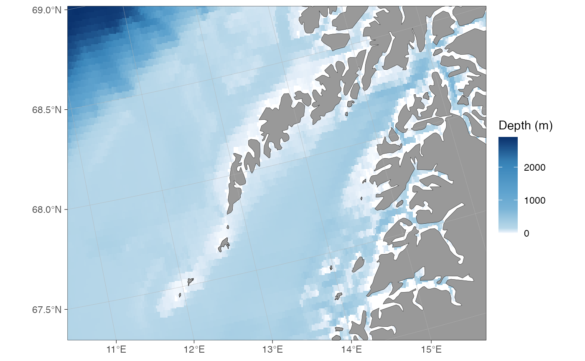
The transform_coord function detects the projection
automatically, given that the map is limited using a similar range of
coordinates. Therefore you can use the transform_coord as
demonstrated above whenever using standard ggplot layers.
transform_coord(data.frame(lon = -80, lat = 25), bind = TRUE)#> lon lat lon.proj lat.proj
#> 1 -80 25 -80 25Worked recipes that build on this — current arrows, velocity fields, pie charts, and recolouring bathymetry — are collected in the Adding graphical elements article.
Rotating maps
The stereographic maps can be rotated to point towards north using
the rotate argument:
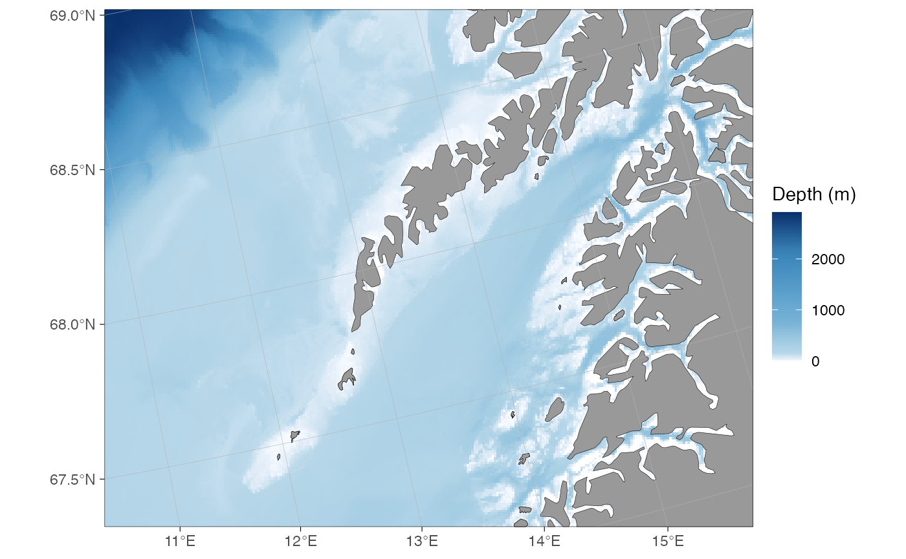
Note that rotation changes the underlying CRS and data need to be
added using ggspatial::geom_spatial_*,
ggplot2::geom_sf() or
transform_coord(rotate = TRUE) functions.
Quick map
The qmap function is designed as a shortcut to quickly
take a look at a spatial dataset. This function automatically detects
the type of data fed into the function and plots a map using appropriate
geometries, limits, and projection. You can use the
expand.factor argument to adjust the automatic zoom into
data.
dt <- data.frame(lon = c(-100, -80, -60),
lat = c(10, 25, 40),
var = c("a", "a", "b")
)
qmap(dt, color = I("red")) # set color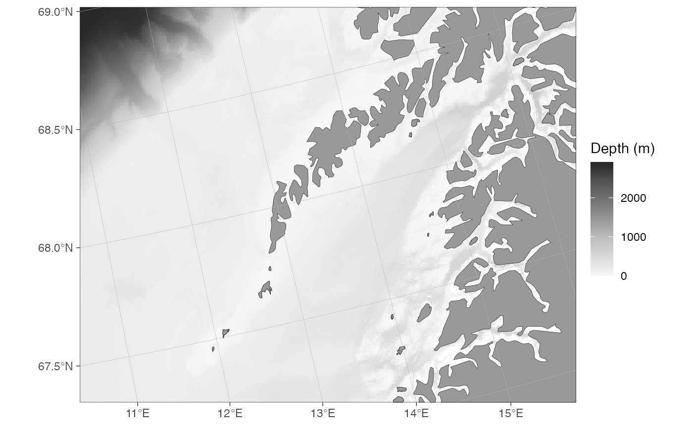
qmap(dt, color = var, expand.factor = 1.3) # map color, zoom out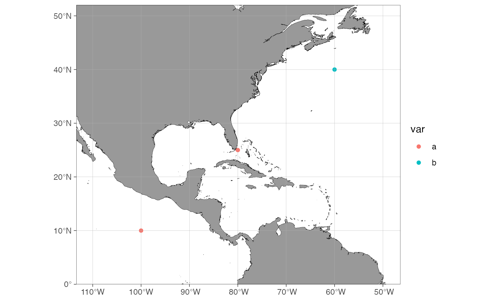
Advanced use
This section focuses on flexibility and user modifications. It is assumed that advanced users understand the basics of geographic information systems (GIS) and how to use these systems in R (e.g. see the Making Maps with R chapter in Lovelace et al. 2020).
Projections
The basemap function uses the limits
argument to automatically detect the required projection for a map (or
the data argument to calculate limits). The
algorithms deciding which projection to use are defined in
define_shapefiles and shapefile_list
functions. The basemap function uses decimal degree land
shapes as default and transforms them to polar stereographic projections
based on following rules (given as EPSG
codes):
-
4326 WGS 84 / World Geodetic System 1984, used in
GPS. Called “DecimalDegree”. For min latitude (
limits[3]) < 30 or > -30, max latitude (limits[4]) < 60 or > -60, and single integer latitudes < 30 and > -30. -
3995 WGS 84 / Arctic Polar Stereographic. Called
“ArcticStereographic”. For max latitude (
limits[4]) >= 60 (if min latitude (limits[3]) >= 30), and single integer latitudes >= 30 and <= 89. -
3031 WGS 84 / Antarctic Polar Stereographic. Called
“AntarcticStereographic”. For max latitude (
limits[4]) <= -60 (if min latitude (limits[3]) <= -30), and single integer latitudes <= -30 and >= -89.
Further, there are higher resolution data that can be downloaded when
needed. They use a projection which suits that region. Here are all
shapefiles and their projections (CRS):
| name | crs |
|---|---|
| ArcticStereographic | 3995 |
| AntarcticStereographic | 3031 |
| DecimalDegree | 4326 |
| Svalbard | 32633 |
| Europe | 3035 |
Since 2.0, it is possible to override the default CRS used by
basemap() using the crs argument:
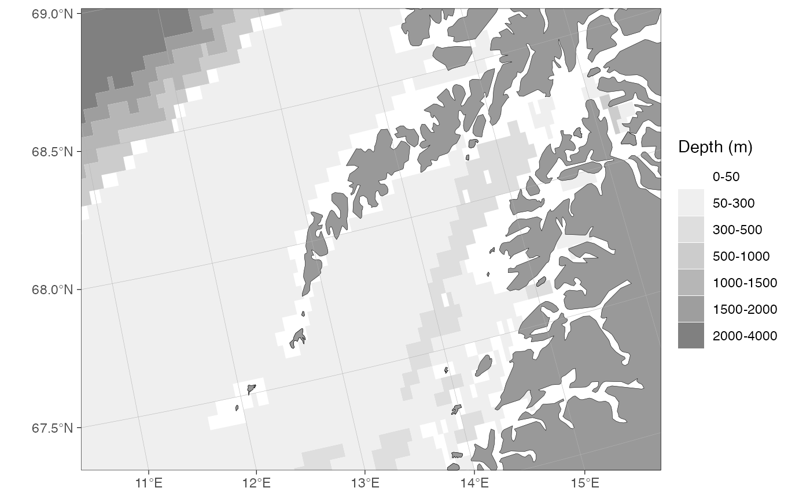
Appearance
Customizing bathymetry scales
The bathy.style = "*_binned_*" bathymetry polygons are
mapped to geom_fill_discrete and can be modified using
standard ggplot syntax:
basemap(limits = c(-140, -105, 20, 40), bathymetry = TRUE) +
scale_fill_viridis_d("Water depth (m)")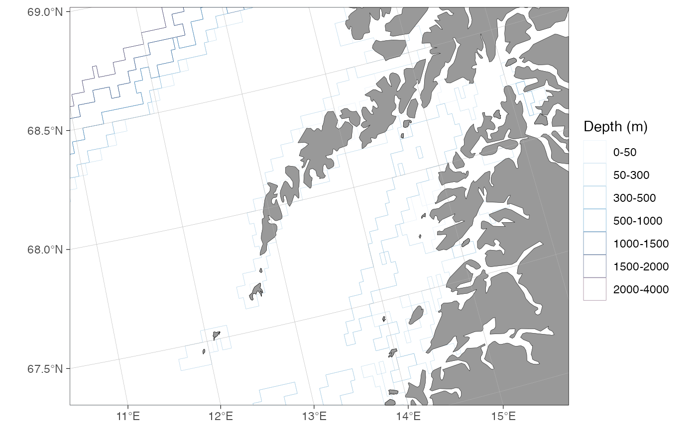
The bathy.style = "*_continuous_*" bathymetry polygons
are mapped to geom_fill_continuous:
basemap(limits = c(-140, -105, 20, 40), bathy.style = "rcb") +
scale_fill_viridis_c("Water depth (m)")The bathy.style = "contour_*" bathymetry lines are
mapped to geom_color_discrete:
basemap(limits = c(0, 60, 68, 80), bathymetry = TRUE, bathy.style = "contour_blues") +
scale_color_hue()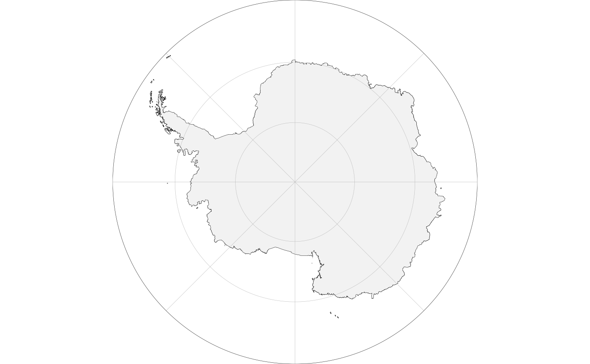
Graphical parameters
The basemap function uses graphical parameters that
(very objectively) happen to please the eye of the author and have
worked in the applications needed by the author. The default parameters
may suddenly change without warning. You may want to modify the
appearances of a basemap to your own liking. This can be
done using the *.col (fill), *.border.col
(line color) and *.size (line width) arguments:
basemap(limits = c(-20, 30, 55, 70), glaciers = TRUE,
bathymetry = TRUE, bathy.style = "poly_greys",
land.col = "#eeeac4", gla.col = "cadetblue",
land.border.col = NA, gla.border.col = NA,
grid.size = 0.05)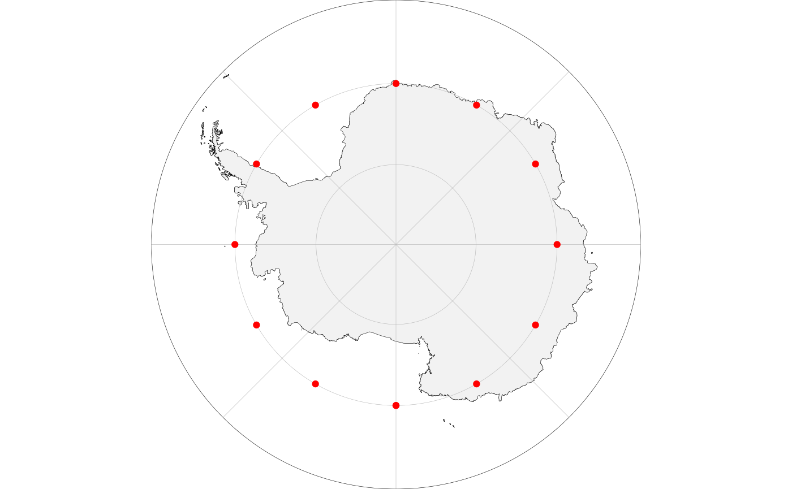
Graticules (the grid lines) can be removed by setting the
grid.col to NA. Axis labels can be manipulated
using standard ggplot code:
basemap(limits = c(124, 148, 31, 50), grid.col = NA) +
labs(x = NULL, y = "Only latitude for you, ...")
Modifying basemap objects
The objects produced by the basemap function are
standard ggplot objects with the difference that relevant information
used in mapping is added to attributes of the object:
p <- basemap(-60)
names(attributes(p))#> [1] "class" "S7_class" "data" "layers" "scales"
#> [6] "guides" "mapping" "theme" "coordinates" "facet"
#> [11] "layout" "labels" "meta" "plot_env" "bathymetry"
#> [16] "glaciers" "limits" "polarmap" "map.grid" "crs"Accessing the attributes allows custom modifications of
maps produced by the basemap function — see Reordering
layers below for an example.
Reordering layers
Spatial data added to a basemap() are drawn on
top of land, glaciers, and graticules. To push those base layers
back above your data (for example to hide polygon outlines that fall on
land), wrap the plot in reorder_layers(). The Cookbook has a worked example using the ICES
and Norwegian fisheries zones.
More customisation recipes
basemap() returns a standard ggplot object,
so most styling is ordinary ggplot2 code. Short, copy-pasteable recipes
for the common cases live in the Cookbook:
- adding a scale bar and north arrow,
- colouring the ocean (panel background),
- moving graticules above or below your data,
- adding a second
fillscale on top of bathymetry (viaggnewscale), - labelling longitude and latitude on polar maps.
Custom shapefiles
When the premade maps do not cover your region at the resolution you
need, you can pass your own land, glacier, and bathymetry layers to
basemap() via the shapefiles argument:
basemap(
limits = c(10, 53, 70, 80),
shapefiles = list(land = my_land, glacier = my_glacier, bathy = my_bathy),
bathymetry = TRUE, glaciers = TRUE
)The list elements land, glacier, and
bathy are all recognised; set glacier and/or
bathy to NULL if you do not need them. All
three must share one projection, which basemap() then uses
for the map.
Building those layers — clipping an existing shapefile, turning a
GEBCO/ETOPO grid into matched land and depth-contour polygons with
raster_bathymetry() → vector_bathymetry() /
vector_land(), or reading Geonorge depth data with
geonorge_bathymetry() — is covered step by step in the
dedicated Customising
shapefiles article. Useful raster and vector data sources are listed
in the Bathymetry article.
Known issues
The land and glacier shapes do not get dissolved correctly when projecting from decimal degrees:
basemap(60, glaciers = TRUE)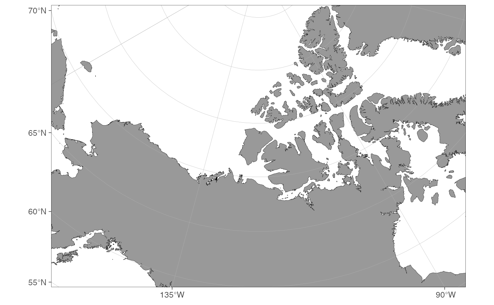
A solution until the issue has been fixed is to use projected downloadable shape files:
basemap(60, glaciers = TRUE, shapefiles = "Arctic")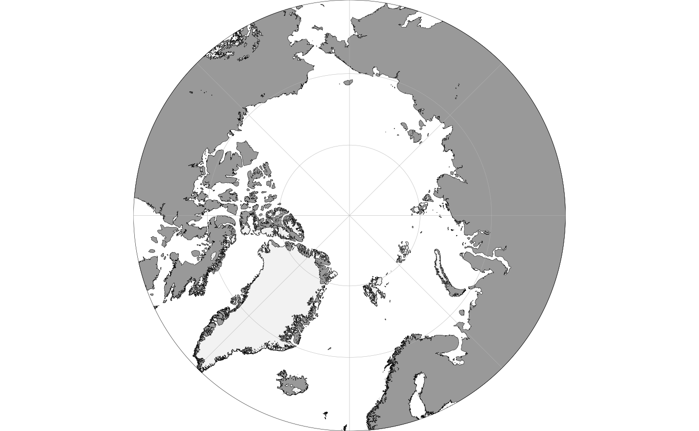
Citations and data sources
The data used by the package are not the property of the Institute of Marine Research nor the author of the package. It is, therefore, important that you cite the data sources used in a map you generate with the package. Please see here for a list of data sources.
Please cite the package whenever maps generated by the package are published. For up-to-date citation information, please use:
citation("ggOceanMaps")#> To cite package 'ggOceanMaps' in publications use:
#>
#> Vihtakari M (2026). _ggOceanMaps: Plot Data on Oceanographic Maps
#> using 'ggplot2'_. R package version 3.0.0,
#> <https://mikkovihtakari.github.io/ggOceanMaps/>.
#>
#> A BibTeX entry for LaTeX users is
#>
#> @Manual{,
#> title = {ggOceanMaps: Plot Data on Oceanographic Maps using 'ggplot2'},
#> author = {Mikko Vihtakari},
#> year = {2026},
#> note = {R package version 3.0.0},
#> url = {https://mikkovihtakari.github.io/ggOceanMaps/},
#> }